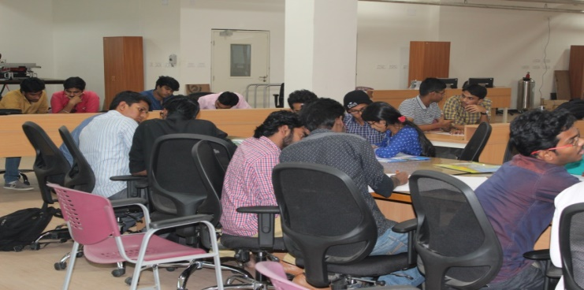
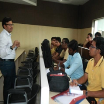

One day Students were allowed to present their design and solution for a suitable problem selected by them in front of select committee. Based on presentation, three students and their design were selected for funding by the DIC. Selected students will also get an internship amount during implementation of the project proposal. This amount is sanctioned in addition to the total implementation cost of the project to be borne by the DIC.

One Day One day training program was conducted for the students/faculty/scientists etc. on design of share auto/future share transport vehicles. The design experts from different leading automobile manufacturers trained and guided the participants in design of future share transport vehicles. More than 120 participants took part in the event. The event was well covered by the famous Tamil Magazine Viktan motors.
One Day In association with Entrepreneurship Development Institute, DIC IIITDM Kancheepuram organized one day training program for the faculty member of various colleges in around Chennai. The hospitality expenditure was completely sponsored by the EDI, whereas invited talk and local infrastructure was provided by the DIC IIITDM Kancheepuram. A total of 28 faculty member participated in the event and get benefited on December 15, 2016.
The students were allowed to choose a problem on the theme of Swatchh Bharat and design a solution using AUTODESK Software. A total of 32 students participated in the competition and a team of three faculty visited each team and questioned the different aspect of the design and simulation video. Based on the feedback from the judges, different winners were announced and the prizes were given by the Director IIITDM Kancheepuram. The program was sponsored by the AUTODESK. Some of the solutions were highly realistic and likely to be considered for funding after release of the next instalment of funding from the Ministry.
A workshop on Design Thinking was conducted during 07.12.2017 – 12.12.2017 in association with Entrepreneurship Development & Innovation Institute (EDII). Design thinking is a creative human-centred methodology that fosters critical thinking, collaboration and enables exploration of complex issues to identify problems/issues in order to create innovative and usable new solutions. This workshop exposure the students to design thinking and process to the door steps of industry clusters for design awareness, improvement, evaluation, analysis and design related intervention and application.
Students of the 2015 batch have designed and developed innovative products under the Product Design & Prototyping course and exhibited the same through Poster Presentation and live demonstration.
A two day workshop on Measurement System Analysis was conducted from 10.10.2018 – 11.10.2018 at IIITDM, Kancheepuram. Col (Retd) Santosh Kumar Dabral was the resource person who explored the use of measurement system analysis using 6 Sigma methodologies for aiding project and research activities of the students and faculty.
Design Challenge was held 24.10.2018 at Design Innovation Centre, IIITDM Kancheepuram to select the best Design / Idea of the students and offer Internship at DIC along with the funding to develop the Design / Idea into a working prototype.